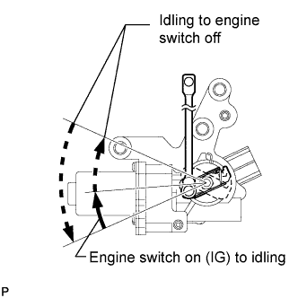

DTC P1251 Turbocharger / Supercharger Overboost Condition (Too High) |
| DTC Detection Drive Pattern | DTC Detection Condition | Trouble Area |
| Vehicle being driven | The turbo motor driver detects an overcurrent caused by the DC motor being stuck (1 trip detection logic). |
|
| DTC No. | Data List |
| P1251 |
|
| 1.CHECK ANY OTHER DTCS OUTPUT (IN ADDITION TO DTC P1251) |
Connect the intelligent tester to the DLC3.
Turn the engine switch on (IG) and turn the tester on.
Enter the following menus: Powertrain / Engine / DTC.
Read the DTCs.
| Display (DTC Output) | Proceed to |
| P1251 | A |
| P1251 and other DTCs | B |
|
| ||||
| A | |
| 2.INSPECT TURBOCHARGER SUB-ASSEMBLY (for Bank 1 and/or Bank 2) |
 |
Check the motor movement when turning the engine switch on (IG), when starting the engine and then when turning the engine switch off.
|
| ||||
| OK | |
| 3.CHECK WHETHER DTC OUTPUT RECURS (DTC P1251) |
Connect the intelligent tester to the DLC3.
Turn the engine switch on (IG) and turn the tester on.
Enter the following: Powertrain / Engine / DTC / Clear.
Clear DTCs (Click here).
Turn the engine switch off.
Start the engine and warm it up.
Drive the vehicle.
Enter the following menus: Powertrain / Engine / DTC.
Read the DTCs.
| Display (DTC Output) | Proceed to |
| P1251 | A |
| No output | B |
|
| ||||
|
| ||||
| 4.INSPECT TURBO MOTOR DRIVER (POWER SOURCE CIRCUIT) |
 |
Disconnect the turbo motor driver connector.
Measure the voltage according to the value(s) in the table below.
| Tester Connection | Condition | Specified Condition |
| Turbo motor driver connector-3 (+B) - Turbo motor driver connector-4 (GND) | Engine switch on (IG) | 11 to 14 V |
| Tester Connection | Condition | Specified Condition |
| Turbo motor driver connector-3 (+B2) - Turbo motor driver connector-4 (GND2) | Engine switch on (IG) | 11 to 14 V |
Measure the resistance according to the value(s) in the table below.
| Tester Connection | Condition | Specified Condition |
| Turbo motor driver connector-4 (GND) - Body ground | Always | Below 1 Ω |
| Tester Connection | Condition | Specified Condition |
| Turbo motor driver connector-4 (GND2) - Body ground | Always | Below 1 Ω |
|
| ||||
| OK | |
| 5.CHECK HARNESS AND CONNECTOR (TURBO MOTOR DRIVER - ECM) |
Disconnect the turbo motor driver connector.
 |
Disconnect the ECM connector.
Measure the resistance according to the value(s) in the table below.
| Tester Connection | Condition | Specified Condition |
| C45-49 (VNTO) - B-4 (VNTO) | Always | Below 1 Ω |
| C45-50 (VNTI) - B-3 (VNTI) | Always | Below 1 Ω |
| C45-47 (VNO2) - D-4 (VNO2) | Always | Below 1 Ω |
| C45-48 (VNI2) - D-3 (VNI2) | Always | Below 1 Ω |
| Tester Connection | Condition | Specified Condition |
| C46-49 (VNTO) - B-4 (VNTO) | Always | Below 1 Ω |
| C46-50 (VNTI) - B-3 (VNTI) | Always | Below 1 Ω |
| C46-47 (VNO2) - D-4 (VNO2) | Always | Below 1 Ω |
| C46-48 (VNI2) - D-3 (VNI2) | Always | Below 1 Ω |
| Tester Connection | Condition | Specified Condition |
| C45-49 (VNTO) or B-4 (VNTO) - Body ground | Always | 10 kΩ or higher |
| C45-50 (VNTI) or B-3 (VNTI) - Body ground | Always | 10 kΩ or higher |
| C45-47 (VNO2) or D-4 (VNO2) - Body ground | Always | 10 kΩ or higher |
| C45-48 (VNI2) or D-3 (VNI2) - Body ground | Always | 10 kΩ or higher |
| Tester Connection | Condition | Specified Condition |
| C46-49 (VNTO) or B-4 (VNTO) - Body ground | Always | 10 kΩ or higher |
| C46-50 (VNTI) or B-3 (VNTI) - Body ground | Always | 10 kΩ or higher |
| C46-47 (VNO2) or D-4 (VNO2) - Body ground | Always | 10 kΩ or higher |
| C46-48 (VNI2) or D-3 (VNI2) - Body ground | Always | 10 kΩ or higher |
|
| ||||
| OK | |
| 6.CHECK HARNESS AND CONNECTOR (DC MOTOR - TURBO MOTOR DRIVER) |
 |
Disconnect the DC motor connector.
Disconnect the turbo motor driver connector.
Measure the resistance according to the value(s) in the table below.
| Tester Connection | Condition | Specified Condition |
| DC motor connector-1 (M-) - Turbo motor driver connector-4 (M-) | Always | Below 1 Ω |
| DC motor connector-2 (M+) - Turbo motor driver connector-3 (M+) | Always | Below 1 Ω |
| Tester Connection | Condition | Specified Condition |
| DC motor connector-4 (M2-) - Turbo motor driver connector-4 (M2-) | Always | Below 1 Ω |
| DC motor connector-8 (M2+) - Turbo motor driver connector-3 (M2+) | Always | Below 1 Ω |
| Tester Connection | Condition | Specified Condition |
| DC motor connector-1 (M-) or Turbo motor driver connector-4 (M-) - Body ground | Always | 10 kΩ or higher |
| DC motor connector-2 (M+) or Turbo motor driver connector-3 (M+) - Body ground | Always | 10 kΩ or higher |
| Tester Connection | Condition | Specified Condition |
| DC motor connector-4 (M2-) or Turbo motor driver connector-4 (M2-) - Body ground | Always | 10 kΩ or higher |
| DC motor connector-8 (M2+) or Turbo motor driver connector-3 (M2+) - Body ground | Always | 10 kΩ or higher |
|
| ||||
| OK | |
| 7.REPLACE TURBO MOTOR DRIVER (for Bank 1 and/or Bank 2) |
Replace the turbo motor driver (for Bank 1 and/or Bank 2) (Click here).
| NEXT | |
| 8.CHECK WHETHER DTC OUTPUT RECURS (DTC P1251) |
Connect the intelligent tester to the DLC3.
Turn the engine switch on (IG) and turn the tester on.
Enter the following menus: Powertrain / Engine / DTC / Clear.
Clear the DTCs (Click here).
Turn the engine switch off.
Start the engine and warm it up.
Drive the vehicle.
Enter the following menus: Powertrain / Engine / DTC.
Read the DTCs.
| Display (DTC Output) | Proceed to |
| P1251 | A |
| No output | B |
|
| ||||
| A | |
| 9.REPLACE TURBOCHARGER SUB-ASSEMBLY (for Bank 1 and/or Bank 2) (DC MOTOR) |
Replace the turbocharger sub-assembly (for Bank 1 or Bank 2) (Click here).
|
| ||||
| 10.REPAIR OR REPLACE HARNESS OR CONNECTOR |
|
| ||||
| 11.REPLACE ECM |
Replace the ECM (Click here).
| NEXT | |
| 12.CONFIRM WHETHER MALFUNCTION HAS BEEN SUCCESSFULLY REPAIRED |
Connect the intelligent tester to the DLC3.
Clear the DTCs (Click here).
Turn the engine switch off.
Start the engine and warm it up.
Run the engine with a heavy load at a mid to high engine speed.
Confirm that the DTC is not output again.
Enter the following menus: Powertrain / Engine / Utility / All Readiness.
Input DTC P1251.
Check that STATUS is NORMAL. If STATUS is INCOMPLETE or UNKNOWN, increase the time spent running the engine with a heavy load at a mid to high engine speed.
| NEXT | ||
| ||